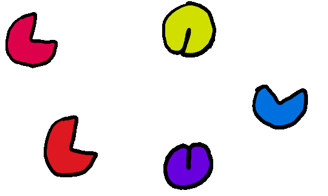
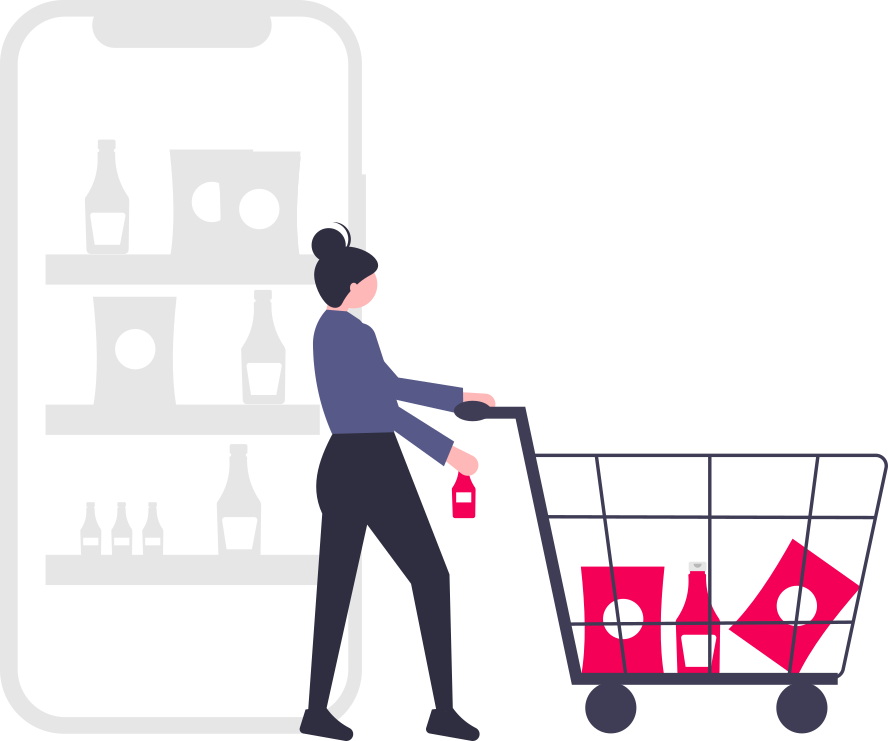

LinkedIn is primarily used for vocational purposes and it is one of the most popular sites to promote yourself professionally and to find jobs.
Let’s take you through how it can be used for this purpose.
Create your profile
Summarise your work experience and personality by filling in details
like your employment history, awards & certifications, and a summary of you!
Summary
Hi! My name is Amanda Wallis.
Work Experience
NESCol Student IT Helpdesk
Part Time
- Assist customers
- Give pets to helpdesk mascot
- Yell at computers if they don't work
Add a bullet
Save
You can also add a profile photo and banner to make your profile stand out.
This allows employers to see who you are and what you can do in order to make
informed decisions on if you are a good fit for their company.
Relevant work experience
Good communication skills
Good work ethic
Build Your Network
No matter what stage of your career it is crucial to continue to build your network.
Your network will come in handy if you are looking for a new position, find new employees or
expand your skills.
You can build your network by connecting with people and they will be notified of your
activity such as posts, new connections or when you start a new job.
Derrick posted
"Looking for a new position..."
Two days ago
Charles posted
"Started a new position! ..."
Three days ago
Find a job
Search for and apply for jobs directly on LinkedIn.
You can notify your network that you are looking for a new position or add an
“Open to work” banner to your profile so that employers know you are looking for
a new position.
LinkedIn also has an Easy Apply feature to allow you to quickly apply to roles.
Participate in conversations
E
a
s
i
l
y
participate in conversations by commenting on posts or articles,
creating or joining a group to connect with other users with similar interests or
create your own posts and articles to share your opinion.

In Summary
In summary, LinkedIn has multiple features to enable users to utilise social media for vocational purposes.
Furthermore, LinkedIn is an incredibly popular website which means more opportunities for their users.
Instagram can be used for both vocational and personal purposes.
Instagram is one of the most popular photo sharing sites!
Let’s have a look how they make it possible…
Create your profile
With Instagram you can create your own unique username, add a bio and add a profile photo.
You can also add a website to your profile.
mycoooolusername
Did you know that this is a bio?
www.amandawallis.com
You can also set your profile type to private or public to control who can see what you post.
Instagram also offers three different types of accounts:
Business
Creator
Personal
These accounts each have their own purpose and available functionality. For example, the business account lets you create
“shoppable” posts.

Discovering Content
Your home page shows videos posted by you and your friends. This may also be called “Your feed”.
You can find videos from accounts you don’t follow yet or you do follow in explore. You can also
view curated topics and search for content.
Activity & Account Insights
Your activity page shows likes and comments on things you post.
The insights overview includes accounts reached, accounts engaged and total followers.
Instagram gives you access to a summary page where you can click on metrics for more information.
You can also set a custom time frame for these insights.
For individual pieces of content you can also see the following metrics:
- Accounts reached
- Accounts engaged
- Content interactions
- Ads
- Plays
In Summary
In summary, Instagram can be used for vocational and personal purposes.
With Instagram's Business account option you can expand your customer base and get your product out there, with the personal account you can share the updates of your life to your family, friends or fans.
Reddit is a network of communities where users can vote on posts and dive into their interests.
Reddit thrives on their community aspect where users moderate communities.
Lets dive into how this works…
Create Your Profile
The steps to creating a profile is as follows:
- Create a unique username, add your email and password.
- Pick from several options to tailor content to you (skippable):
- How you identify as
- Pick 3 interests
- Pick from a few communities
- Select an avatar. An avatar is a customisable character which you can pick outfits, facial
expressions and so much more for!
Post, Comment and Vote
The three main features of reddit is posting, commenting and voting. With voting you can upvote or downvote posts.
The most interesting content rises to the top.
Communities or Subreddits
A reddit community or subreddit is a section or page which are created and moderated by Redditor's that look at a specific topic.
For example, r/cscareerquestions is as the name implies to ask questions about careers in computer science.
You browse communities for all sorts of interests, for example:
- Art
- Sports
- Careers
- Gaming
- And so much more!
There are also some communities or subreddits to find communities. For example:
- r/all
- r/newreddits
- r/popular
Businesses can also play ads for specific communities to be able to get the most out of your advertisements.
r/place
One interesting community is r/place. This community is a canvas where you can add a single coloured pixel every five minutes to a large canvas.
You can overwrite existing pixels too!
The goal is to have a collaborative piece of art. This shows and encapsulates Reddit's community or collaborative work.
In Summary
In summary, Reddit operates in a community-like way. This is achieved through sub communities, user moderation and voting.
Reddit can also be used for business by allowing business to target their advertisements to certain Redditors.